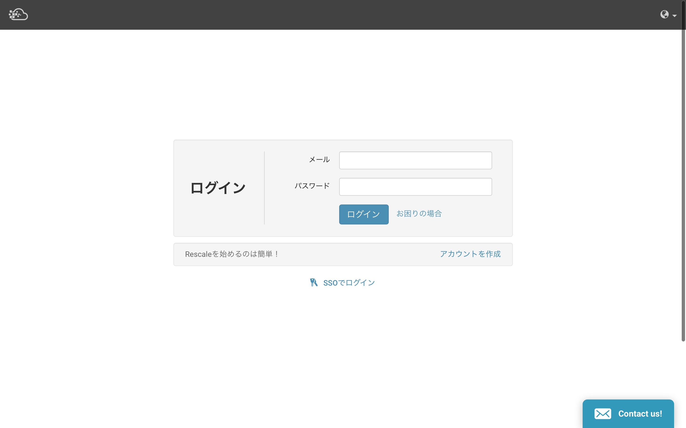
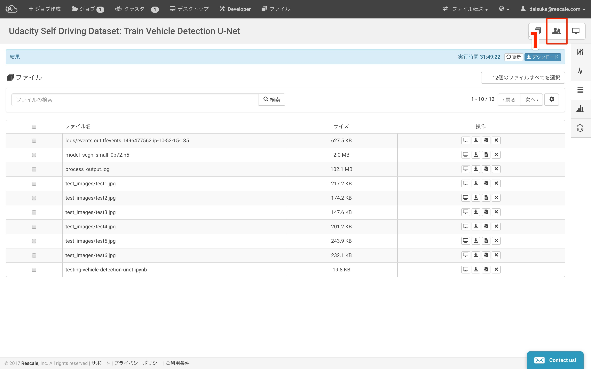
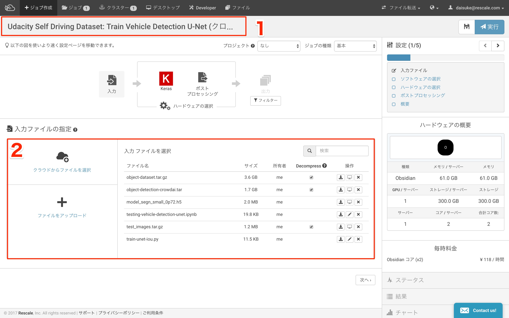
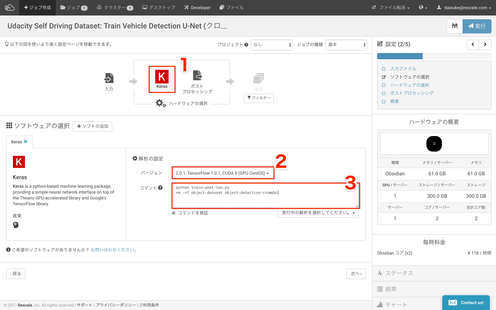
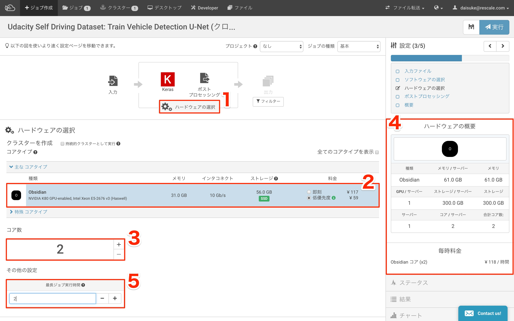
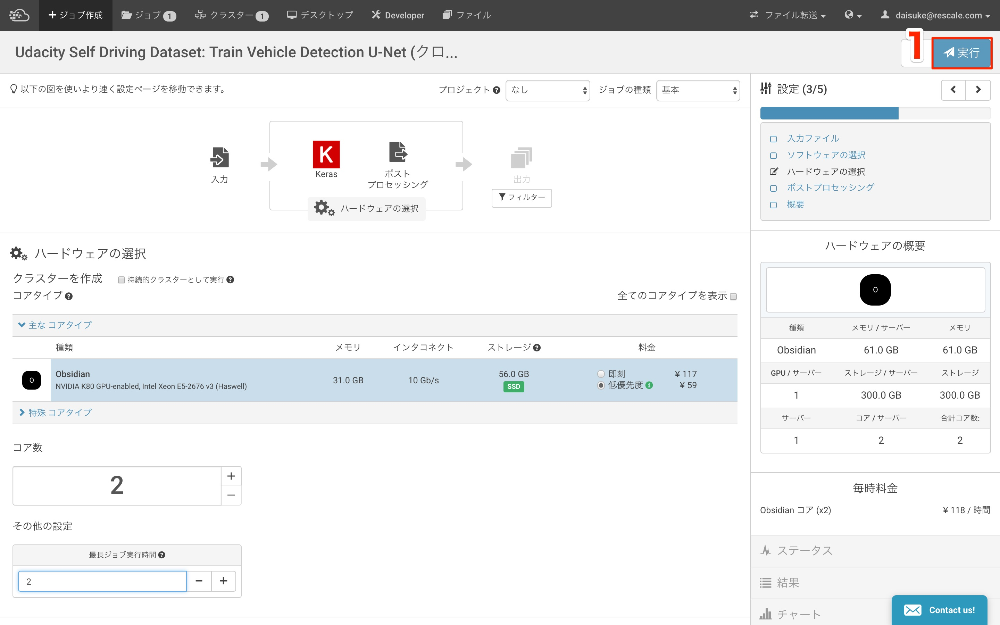
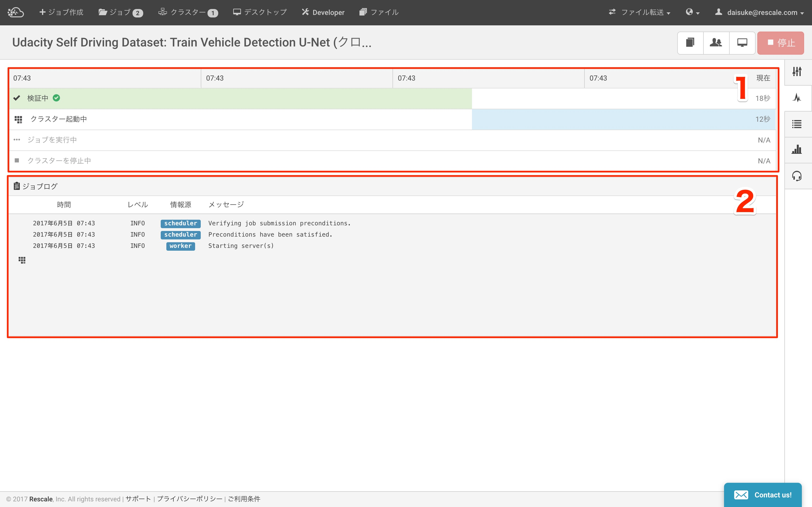
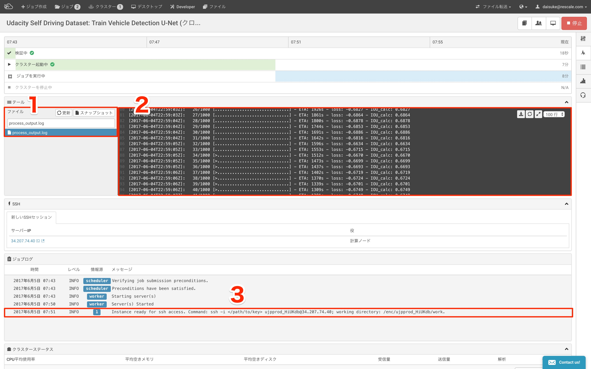
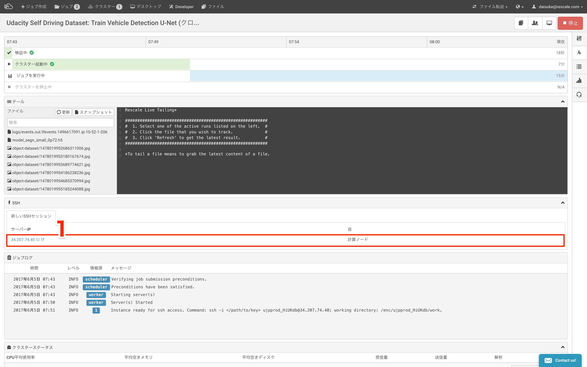
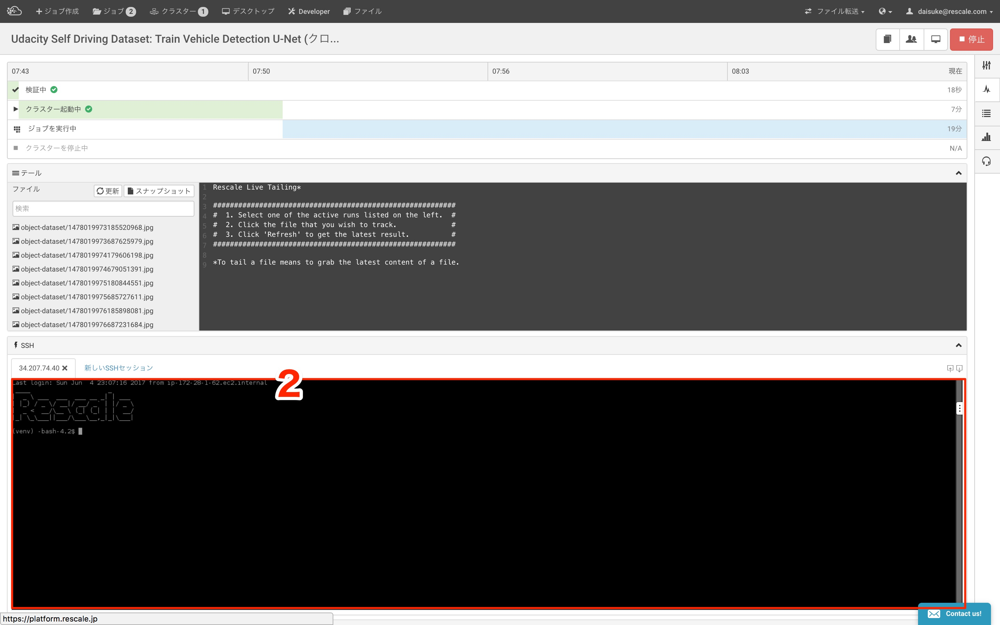

1. KerasのチュートリアルジョブをCloneしてRescale操作の概要をつかむ
クローンの機能を使いこなすことで、ゼロからの設定なしにジョブを実行できることを学ぶ (ワークフローの保存)
1.1. ログイン
RescaleのJP環境へ ログイン します。

1.2. ジョブの作成
1.2.1. ジョブのインポート
ログイン後、こちらをクリックしてモデルをインポートしてください(jp環境のみ)
1.2.2. ジョブの Clone
クローン をクリックします。インポートしたジョブをテンプレートに新しいジョブを作成することができます。

1.2.3. 入力ファイルの設定
- 任意のジョブ名に変更します
- 必要に応じて、
入力ファイル指定 を操作しファイルを入れ替えます (今回は変更する必要はありません)

1.2.4. アプリケーションの設定
ソフトウェアのアイコン Keras をクリックします
バージョン を確認します(今回は変更する必要はありません)
コマンド を編集します。今回は以下のように``time`` コマンドと、最後にechoコマンドを追記します)
time python train-unet-iou.py
rm -rf object-dataset object-detection-crowdai
echo "my job is finish"

1.2.5. HWの設定
ハードウェア選択 のアイコンをクリックします- 選択されているコアを確認します。(i) のマークが緑であれば、
低優先度 を選択します
コア数 を確認します- コア数に応じて、
ハードウェアの概要 に表示されているスペックと 毎時料金 が動的に変化することを確認します
最長ジョブ実行時間 を入力します。この学習は半日程度かかるので今回は “2” と入力して、強制終了させます

1.3. ジョブの実行 (学習の開始)
1.3.1. ジョブの実行
実行 をクリックします

1.3.2. クラスタの起動確認
実行ボタンクリック後、下図に自動的に遷移します
検証中 にチェックがついて、クラスタ起動中 になっていることを確認しますジョブログ に Starting Server(s) になっていることを確認します

1.4. 実行中のジョブ確認
1.4.1. 標準出力の確認
ファイル の検索窓に process_output.log と入力しますテール 内の黒い枠に tensorFlow が標準出力に出すログが表示されていることを確認します- 公開鍵を設定していれば、ここに ssh ログインするためのコマンドが表示されます

1.4.2. In Browser SSH
SSH 内の サーバーIP をクリックします- ブラウザー内に、計算ノード(学習しているマシン)の ターミナルが表示されたことを確認し、また適当なコマンドを実行できることを確認します。


{kind=link}
{kind=link}
{kind=link}
{kind=link}
{kind=link}
{kind=link}
{kind=link}
{kind=link}
{kind=link}
{kind=link}